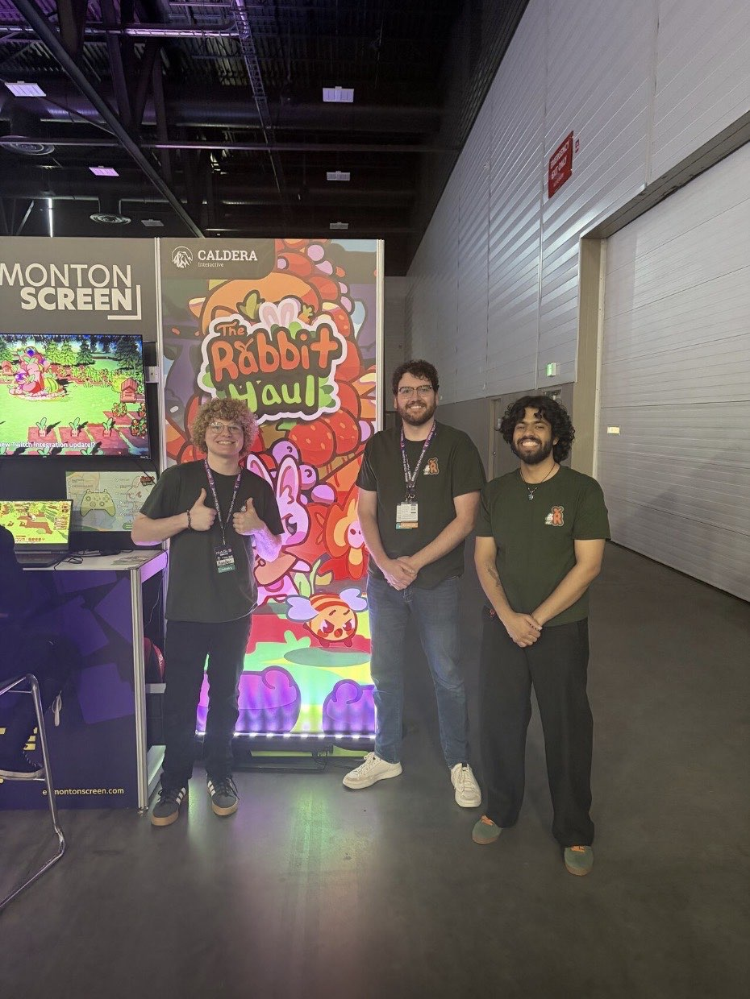

Industry Involvement
Getting involved in the game development community.
Beyond building projects, I am also working to connect with the local game development community, support studios, attend events, and gain experience representing games in public settings.

Volunteer Experience
Game Con Canada 2026
Volunteer Booth Support – Caldera Interactive
I volunteered with Caldera Interactive during Game Con Canada, helping operate the studio booth and represent the team to attendees. I helped introduce visitors to the game, answer questions, support booth activity, and create a welcoming experience for players interested in indie games.
What I Gained
This experience gave me a better understanding of how studios present their games to the public, how players react to games at events, and how important clear communication is when representing a project or team.
Future Involvement
I plan to continue attending game development events, networking with local developers, supporting indie studios, and looking for opportunities to participate in showcases, game jams, and community events.